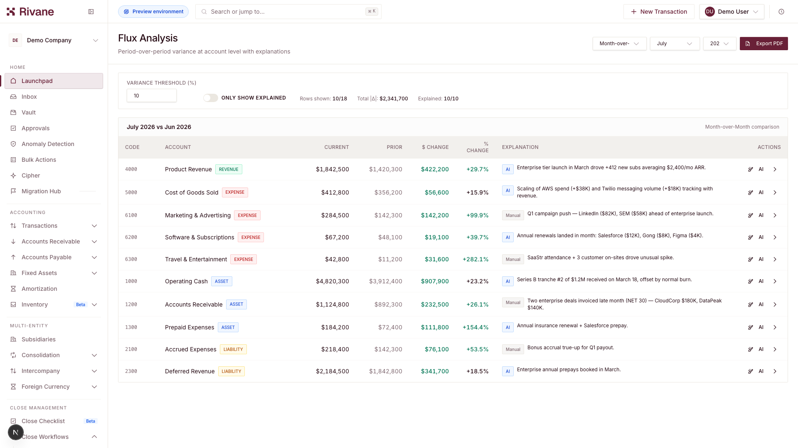

Of focused product development.
Core accounting, close and group reporting workflows.
THE AI-NATIVE FINANCE ERP
The AI-native finance ERP for multi-entity groups. Starting in the Gulf.
AI proposes. Finance approves.
Rivane extracts the amount and service period from the source.
General ledger, payables, receivables and source documents.
Reconciliation, approval queues and work assigned to an owner.
Close management, revenue schedules and group reporting.

▶Watch the product demoRivane finance platform overview↗Core accounting, close and group reporting workflows.
Active enterprise and design-partner conversations. Migration and adoption are being validated.
The next evidence is a paid close and a repeatable path to the next group.
Finance heads still resolve exceptions and explain the close through spreadsheets and implementation partners.
Reported in conversations with finance heads of Gulf multi-entity groups.
Plus $15K a year to maintain it.
The same finance head still cannot get the reports he needs without the implementation partner.
UAE e-invoicing and Saudi’s phased ZATCA integration bring finance systems back onto the decision agenda.
An external trigger to revisit the stackCross-border holding structures put entities, currencies and intercompany work at the centre of the close.
A concentrated, recurring painRivane’s bet combines accounting depth with Gulf buying context, localisation and a regional compliance roadmap.
A focused entry into a larger categoryThe ERP holds the transactions. The team carries the reconciliation, consolidation and reporting around it.
Owns the close, the intercompany differences and the explanation of every number.
A new entity, reporting pressure or compliance change makes another spreadsheet workaround untenable.
Reconcile the result alongside the incumbent before asking the group to move its ledger.
The useful unit of accounting AI is a controlled action with evidence.
Read the relevant records within the user’s permitted scope.
Prepare an accounting action that a person can inspect.
An authorized person reviews the change before execution.
Keep the resulting record connected to the decision.
A finance head should be able to prove Rivane before replacing the system they rely on.
Start with a defined problem, real books and a bounded module beside the existing ERP.
Lower the commitment required to tryValidate migration and outputs. Reconcile to the incumbent and review exceptions with the finance owner.
Turn product claims into evidenceExpand module adoption and become the system of record once the customer trusts the numbers.
Grow the relationship after proofThe replacement hurdle is high. A buyer needs proof before handing over the books.
Rivane enters alongside the incumbent and proves a module first.A growing group needs more depth across entities, currencies and the close.
Rivane leads with group accounting and connected reporting.AI is becoming a category expectation. The buyer still needs regional fit and accountable decisions.
Rivane’s wedge is Gulf focus with traceable, governed actions.Subscriptions scale with entities and usage. Unlimited users across plans.
1 entity
3 entities
10 entities
A bounded module beside the incumbent earns the first proof.
The same finance team can extend a trusted process across its group.
After validation, Rivane earns responsibility for the group’s books.
Gulf finance networks and accounting partners create access to the next group. Each relationship must still convert on product proof.
Qualified opportunities that convert into paid use, with an understood buying process.
A completed close, reconciled outputs and an onboarding process the team can repeat.
Validated country-specific workflows, Arabic delivery and required provider integrations.
A deployable model matched to a qualified customer’s residency and operating requirements.
Founding designer at Ema, building enterprise AI workflows across finance, HR and IT.
Schooled in Jeddah. Understands the culture and relationships behind enterprise buying in the region.
IIT Roorkee. Fifteen years building systems where a wrong number has real consequences.
Engineering leadership at Amazon, with earlier experience at Rippling, udaan and Disney+ Hotstar.
FUNDRAISING
Turn product depth into paid
adoption across Gulf groups.
Starting point. Round size and structure remain open.
Senior commercial capacity close to the buyer.
UAE e-invoicing, Saudi ZATCA and Arabic.
Design partners and a sovereign deployment path.